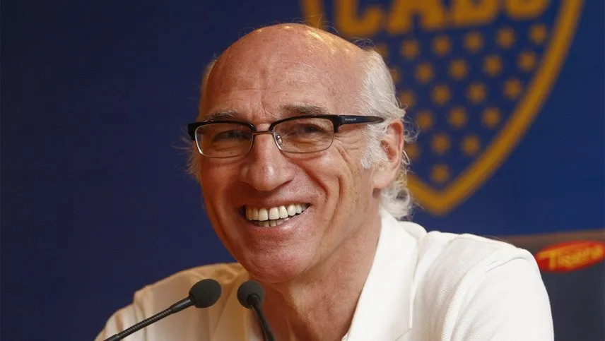
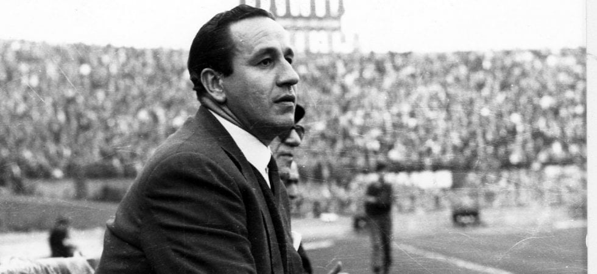
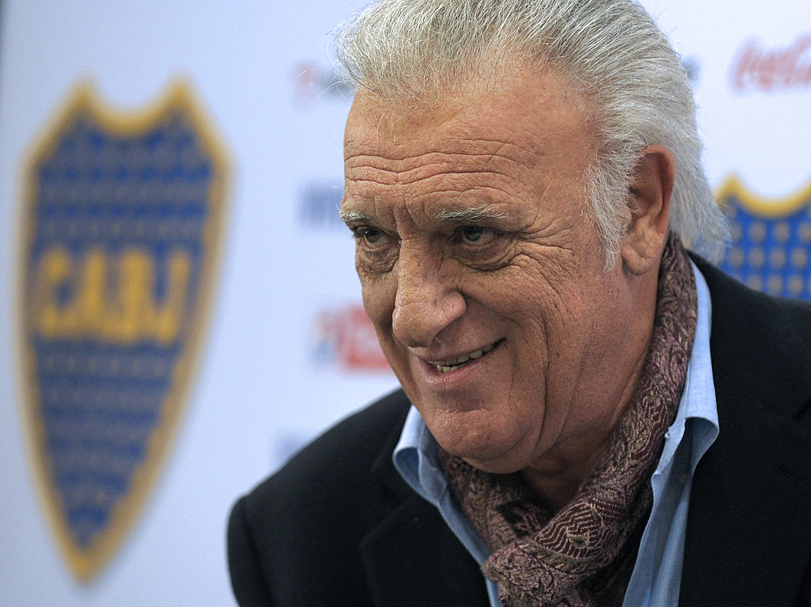
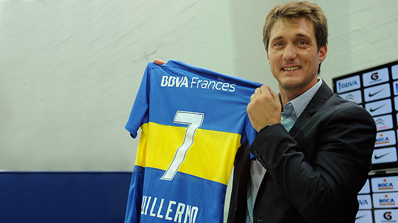
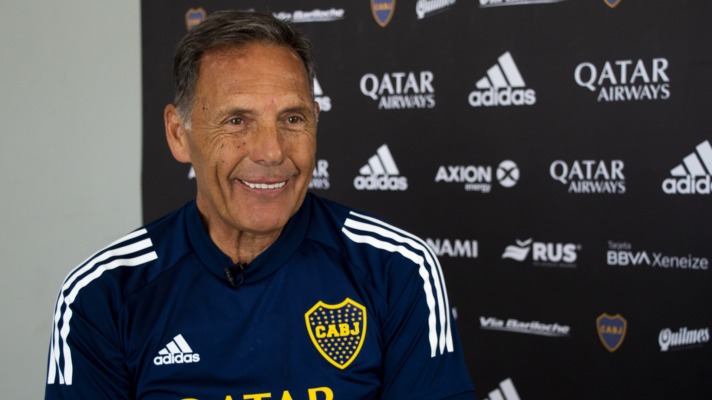

Carlos Bianchi es una figura legendaria en el fútbol argentino y sudamericano. Su capacidad para llevar equipos a la gloria tanto a nivel nacional como internacional, su estilo de liderazgo y su legado perdurable lo han convertido en un ícono del deporte. Más info aqui
Juan Carlos Lorenzo es una figura legendaria en el fútbol argentino, especialmente en Boca Juniors. Su capacidad para transformar equipos y llevarlos a la gloria tanto a nivel nacional como internacional lo ha convertido en un ícono del deporte. Su legado perdura en la memoria de los aficionados y en la historia del fútbol. Más info aqui
Alfio "Coco" Basile es un destacado entrenador y exfutbolista argentino, conocido por su éxito tanto en clubes como en la selección nacional de Argentina. Nació el 1 de noviembre de 1943 en Bahía Blanca, Argentina. Más info aqui
Guillermo Barros Schelotto es un exfutbolista y entrenador argentino, ampliamente reconocido tanto por su éxito en el campo de juego como en su carrera como técnico. Nació el 4 de mayo de 1973 en La Plata, Argentina. Más info aqui
Miguel Ángel Russo es un reconocido entrenador y exfutbolista argentino, conocido por su éxito en clubes tanto a nivel nacional como internacional. Nació el 9 de abril de 1956 en Lanús, Buenos Aires, Argentina. Más info aqui
